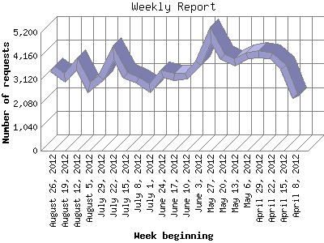

The Weekly Report identifies the activity for each week within the report
time frame. Remember that one page hit can result in several server requests
as the images for each page are loaded.
Note: Depending on the
report time frame for this report the first and last week may not represent
a full seven day week, resulting in lower hits.

| Week beginning | Number of requests | Number of page requests | |
|---|---|---|---|
| 1. | April 8, 2012 | 2,335 | 114 |
| 2. | April 15, 2012 | 3,682 | 192 |
| 3. | April 22, 2012 | 4,182 | 211 |
| 4. | April 29, 2012 | 4,251 | 209 |
| 5. | May 6, 2012 | 4,162 | 203 |
| 6. | May 13, 2012 | 3,869 | 234 |
| 7. | May 20, 2012 | 4,136 | 175 |
| 8. | May 27, 2012 | 5,104 | 203 |
| 9. | June 3, 2012 | 3,837 | 158 |
| 10. | June 10, 2012 | 3,289 | 161 |
| 11. | June 17, 2012 | 3,226 | 173 |
| 12. | June 24, 2012 | 3,387 | 133 |
| 13. | July 1, 2012 | 2,750 | 153 |
| 14. | July 8, 2012 | 3,097 | 164 |
| 15. | July 15, 2012 | 3,316 | 183 |
| 16. | July 22, 2012 | 4,310 | 225 |
| 17. | July 29, 2012 | 3,203 | 153 |
| 18. | August 5, 2012 | 2,767 | 148 |
| 19. | August 12, 2012 | 3,807 | 227 |
| 20. | August 19, 2012 | 3,216 | 199 |
| 21. | August 26, 2012 | 3,599 | 263 |
Most active week beginning August 26, 2012 : 263 pages sent. 5,104 requests handled.
Weekly average: 184 pages sent. 3,596 requests handled.
This report was generated on September 1, 2012 22:18.
Report time frame April 11, 2012 00:05 to September 1, 2012 23:28.
| Web statistics report produced by: analog 5.1 / Report Magic 2.21 |